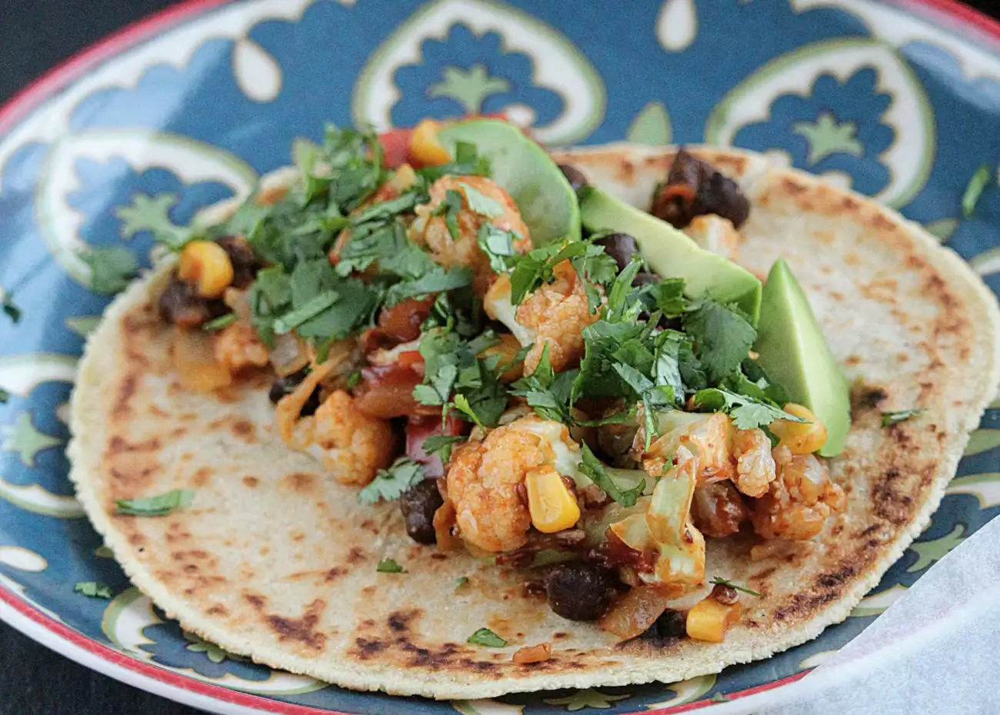

Plant-based taco

Description:
Healthy and delicious tacos, good for any occasion.
Ingredients:
- Cauliflower
- Black beans
- Corn
- Onions
- Taco seasonings
- Tortillas
Steps:
- Chop cauliflowers, steam them for 5 minutes
- Cook black beans and corn using instant pot for 30 minutes
- Chop onions, sauté them with an iron skillet.
- Add your favorite taco seasonings to taste
- Mix, wrap them in tortillas, and enjoy!